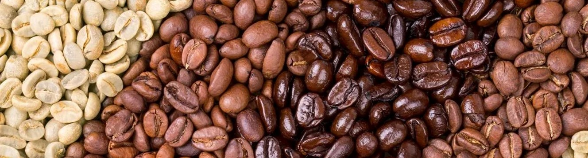
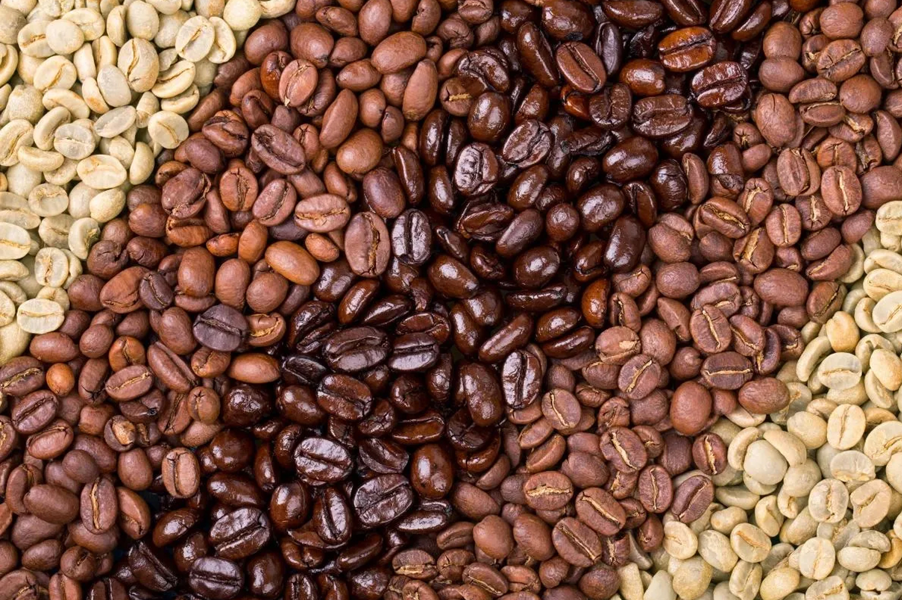
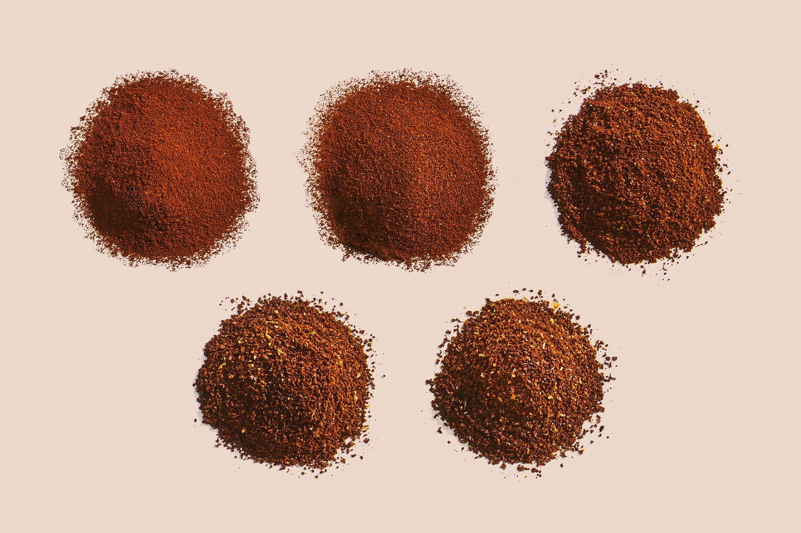
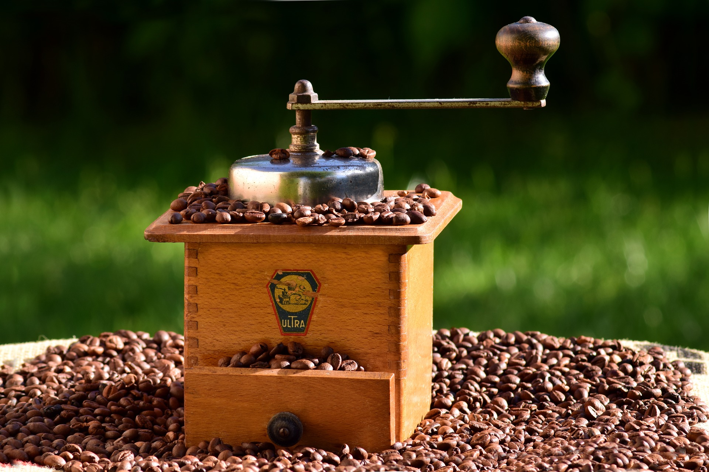
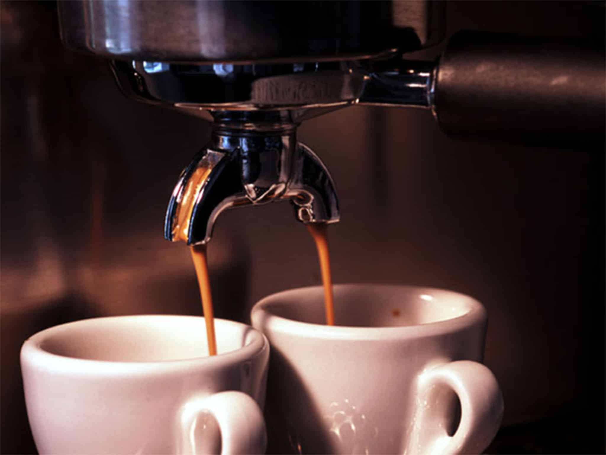

생두(Coffee Bean)에 열을 가해 물리적·화학적 과정을
반복시켜 색상, 맛, 향미 성분을 발현시키는 과정이다.
배전이라고도 하며, 로스팅 과정을 위해 생두의 수확시기, 수분함량, 조밀도, 종자 등에 따라 방법이 달라진다.
로스팅 과정을 거치면서 생두가 원두가 된다.
Blending


서로 다른 나라나 지역에서 생산한 커피를 섞어 배합하는 과정이다. 꼭 필요한 과정은 아니지만, 특성이 다른 2가지 이상의 커피를 혼합하여 새로운 향미를 가진 커피를 만들 수 있다.
배전이라고도 하며, 로스팅 과정을 위해 생두의 수확시기, 수분함량, 조밀도, 종자 등에 따라 방법이 달라진다.
블렌딩을 잘하면 맛과 향을 더 깊고 조화로운 향미를 만들어 낼 수 있다.
Grinding


원두를 분쇄하는 과정이다.
원두를 분쇄함으로써 커피 추출의 면적을 넓혀주기
위한 작업이기에 분쇄 정도(입자 굵기)에 따라서
커피의 맛과 향이 달라진다.
추출하는 방식에 따라서 분쇄 정도(입자 굵기)가 다르다.
Brewing

분쇄한 원두를 추출하는 과정이다.
여기서 우리가 알고 있는 커피가 완성이 된다.
추출하는 도구에 따라서 다양한 커피를 즐길 수 있다.
대표적으로 모카포트, 프렌치프레소, 핸드드립, 에스프레소가 있다.